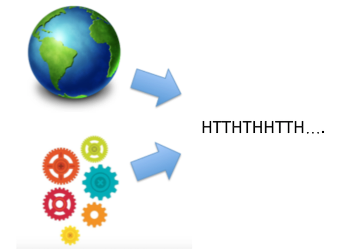
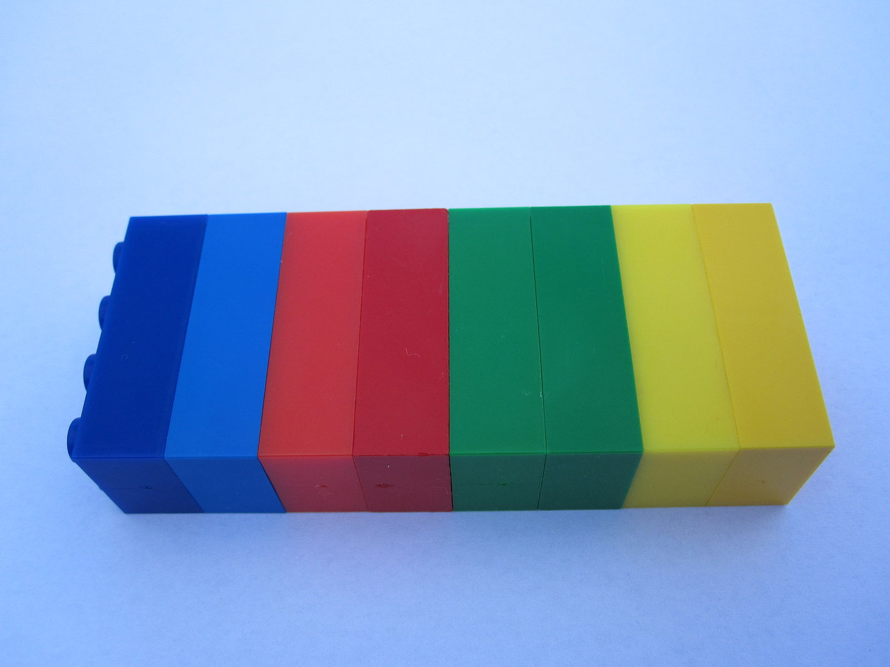
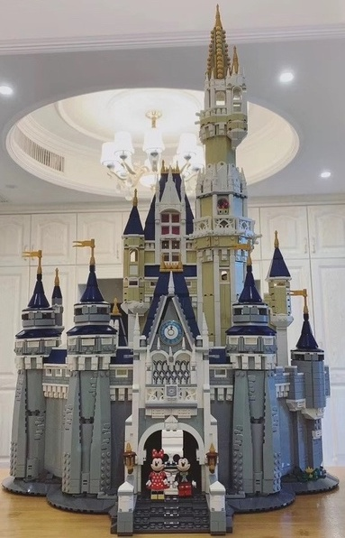
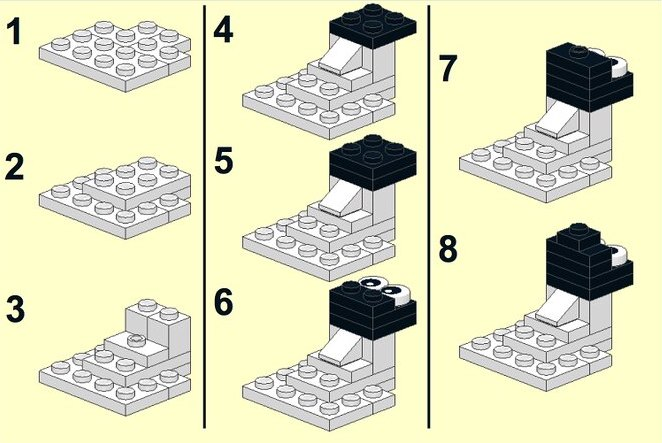
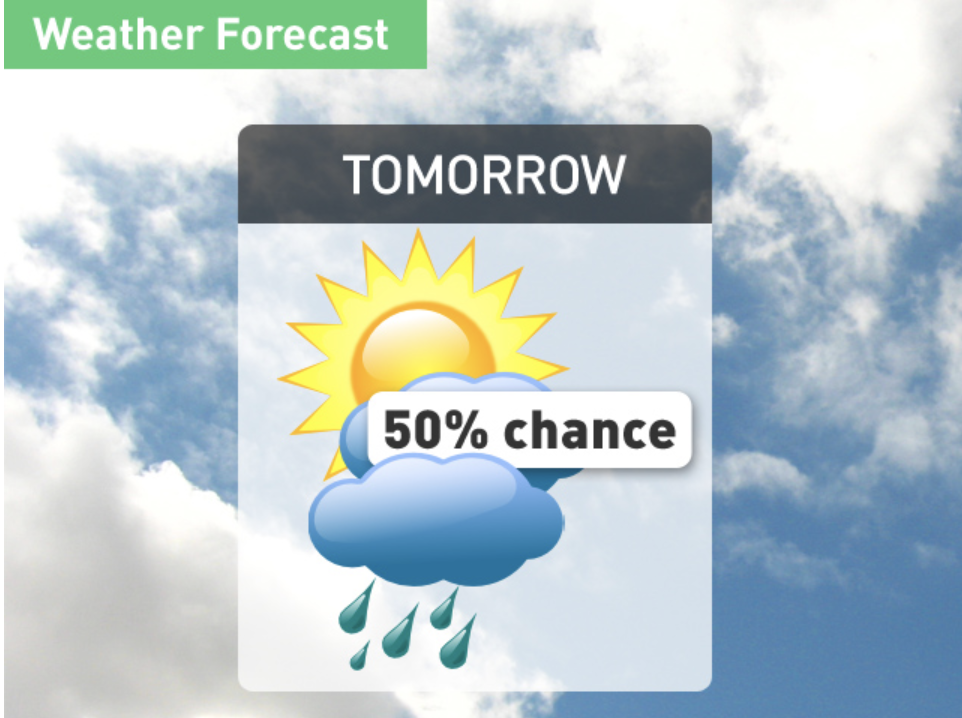
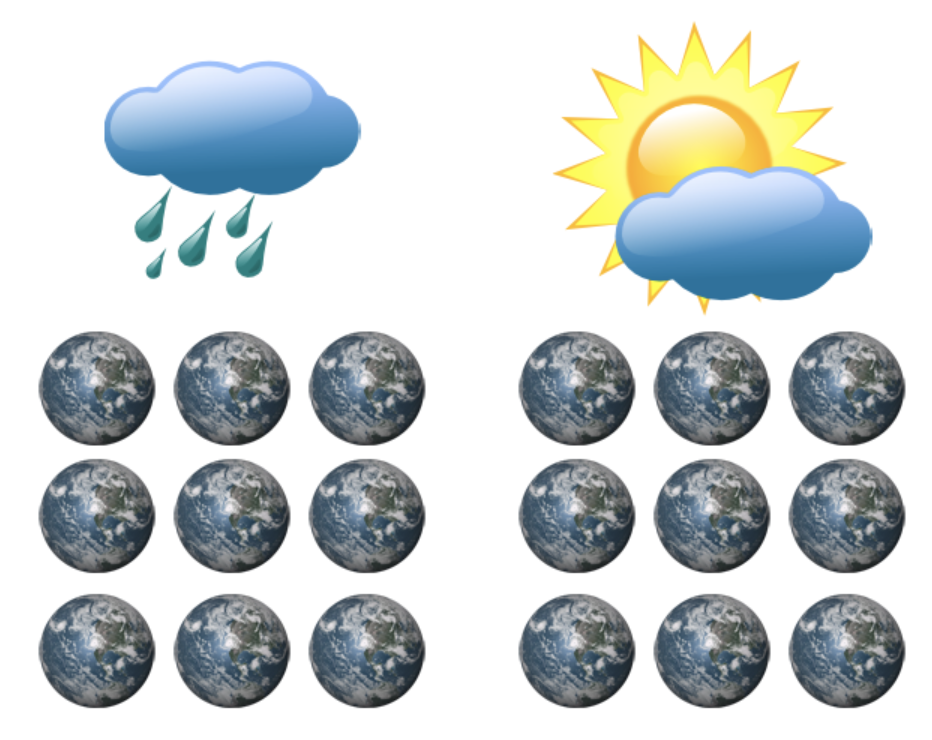
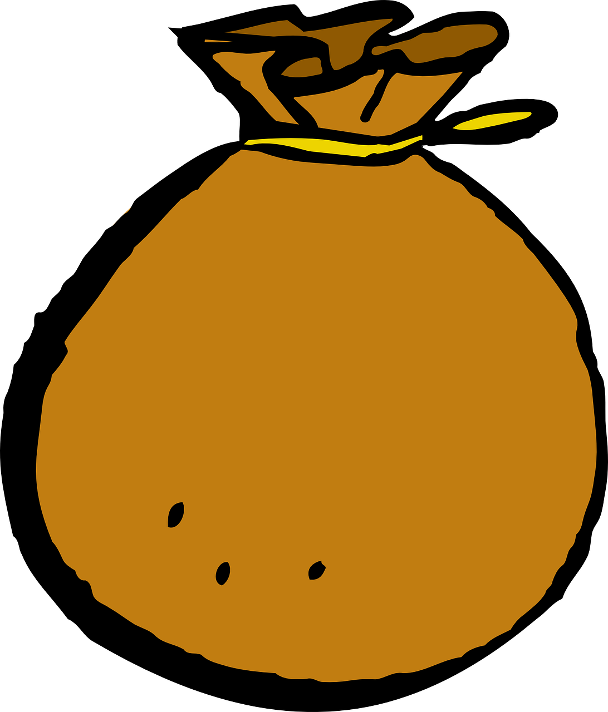

Week 1
Introduction to Probability
The Nature of Statistical Models
What is a Model?
- This course is about statistical modeling. So let’s start by asking, what is a model?
- Here’s a model, built out of lego bricks.
- Some of you might have played with legos growing up, I definitely did.
- The thing with legos is you learn some basic rules: the ways that legos can fit together.
- Then you can build something that resembles something in the real world, that captures important behavior.
- When you’re starting out with legos for the first time, you don’t immediately try to build a giant machine.
- Maybe you take two legos, test them to see how they fit together. Once you’re familiar with the pieces, you can then try to create something that you see in the world.
What is a Statistical Model?

- A statistical model is also a representation of something in the world.
- When you have data, it comes from a real-world system.
- But we don’t just care about this data, we have questions: what data is coming next? what other data could have plausibly come up? what features of the world are consistent with this data?
- For those questions, we can’t interrogate the world directly, we need a statistical model.
- This is a representation that also creates data.
- We have to pretend that this data actually came from the model. Then we can start to answer these questions.
Course Plan
- Putting together statistical models
- Fitting models to data
- When we designed this course, we decided to follow a very strict narrative.
- At the highest level of abstraction, here’s our plan…
- Most courses jump around, looking at data, then building models, then back.
- We believe it’s better to really commit to understanding models, then apply them.
- Because of that, we’re actually not going to touch any data for several weeks.
- But don’t worry, there will be a LOT of application in the second half of the course.
First Models

- When we start out, our models are not going to resemble the world at all.
- They will be brittle - with no flexibility to make them look like the real world.
- Actually, just like this tower of legos, they may be very rectangular.
- You may ask, where did this rectangular distribution come from?
- The answer is we made it up! and we just want to build something simple to understand how the bricks fit together.
Useful Models

- But the key is not to worry about those problems at the beginning. As we learn more, we’ll see that our models can be more flexible, to represent a wide range of real-world systems.
- We’ll also learn how to fit our models to data, and that’s going to make them really useful.
Probability is Rules for Putting Pieces Together

- This week, we’re starting with the foundation: probability theory.
- This is really the nuts and bolts, how do the pieces of statistical models fit together.
- A strong understanding of probability will be useful to you through this course and through your career as a data scientist.
Unit Plan
Necessary Foundation
- A precise definition of probability
- How mathematicians build from a set of axioms to useful properties
- How to connect these properties to problems that we want to solve
Reading Assignment
Reading Assignment
Throughout this course, we intersperse reading, lectures, and work that you complete as a bundled async. This way, you can very quickly move from :
- An introduction to a concept
- An explanation of its use
- A proof of that concept
- An application using data or problem solving
We have designed the course so that you can complete the async, reading, and lecture activity components over a few self-contained study sessions.
Reading Assignment (cont.)
- Introduction, page xv - xviii
- What do we actually say in this?
Probability is Reasoning Under Uncertainty
Probability is A System of Reasoning
“Essentially, the theory of probability is nothing but good common sense reduced to mathematics. It provides an exact appreciation of what sound minds feel with a kind of instinct, frequently without being able to account for it.”
- Pierre-Simon Laplace
- How would you define probability? Is it something that you encounter in your day-to-day life? A measure of randomness in the world?
- Laplace was a famous mathematician, who developed what we call the Bayesian interpretation of probability. Let’s read what he said in 1814.
- Laplace believed that, as humans, we are natural processors of probability. We think in probabilities, we use probability when we speak to each other.
- So of course we think of probability as existing out in the natural world.
- But, I’m here to tell you that probability is actually a model.
- That’s right, the randomness that we perceive around us is a model that we use to make sense of the world.
- Let me try to convince you with a few examples.
Probability is A Model of the World
“All models are wrong; some are useful.”
—George Box
Probability is:
- A mathematical construct
- A model or abstraction of the world
- But I’m here to tell you that probability is just a model. It’s a very useful model - one that we can make mathematically precise. But it’s a model of the world.
- Let me try to convince you with a few examples.
- Not sure how to fit the Box quote into the narrative - wonder if there’s something more specific to probability.
Probability is a Model - Example 1
- First, say that you go to the doctor with some abdominal pain.
- The doctor tells you that you have an 80% chance of having kidney stones.
- But is there any randomness in whether you have kidney stones?
- If you walk out of the office and come back the next day, will you have kidney stones 80% of the time?
- Of course not. There’s no randomness, you either have kidney stones or you don’t.
- The doctor is using probability in what we call its subjective sense – as a strength of belief.
Probability is a Model - Example 2

- Next, you look at the weather forecast and you see that there’s a 50% chance of rain tomorrow.
- Is there any randomness in whether it will rain? It’s a future event, so you might think maybe.
Probability is a Model - Example 2 (cont.)

- But what if you made 100 copies of the earth, and arranged the atoms in each one perfectly in exactly the same position with the same speed. Would it rain in your location in half of them?
- Probably it would rain in all of them or none. If we could perfectly model how all the atoms in the atmosphere interact, we’d know for sure whether it will rain.
- Again, there’s no real randomness - probability is just a model for the world.
Probability is a Model - Example 3
- Finally, what about the most classic random event of all - the coin flip.
- Everyone knows that a coin lands heads 50% of the time.
- But is that true? What if you could flip the coin in exactly the same way each time.
- And make sure every single atom in the air was moving in exactly the same way.
- You would probably find that it lands on the same side each time.
- Really, the only people who work with true randomness are quantum physicists. The rest of us are using probability as a model.
An Axiomatic Approach
Why take an axiomatic approach?
- Define a minimal set of statements that are consistent with the world we observe.
- Deduce statements that must then be logically entailed.
- We already have an intuitive model for probability in our heads, but that’s not enough to build statistical models - we need a mathematically precise system.
- How do we create one? We distill our intuition into a small set of axioms. This is what mathematicians do…
- Suppose that you’re rolling dice – you could observe that the P(1|2) is just P(1) + P(2). You could write that down as a fact.
- If you kept doing that, you’d end up with a huge pile of facts, and you still would not be able to predict the probability of a new event. You would have no logical way to move from one fact to another.
- Instead, we need to identify axioms that explain the probabilities of many different events. Induct up to a higher set of principles – the pieces of the model that we need, that are used to predict events.
- You might find this frustrating – you might want to study this like it is an observational science; counting lions or cosmic rays. But, it isn’t!
- Probability is a model, so we’re inventing the rules, not discovering them. But if our system reminds us enough of the real world, it can be useful.
Learnosity: Set Theory Diagnostic Quiz
Set Theory
If you already understand the following notation and can solve the problem, we recommend that you skip this sequence and go straight to the next segment about partitions.
Notation:
- \(A\) and \(B\) are sets.
| Operation | Notation |
|---|---|
| Union | \(A \cup B\) |
| Intersection | \(A \cap B\) |
| Set Difference | \(A \setminus B\) |
| Complement | \(A^C\) |
| Empty Set | \(\emptyset\) |
Simplify the expression:
\[(A \cap B) \cup (B \setminus A)\]
- To understand the upcoming definitions, you will need to be familiar with basic set theory. This sequence is a quick review of the set operations we will be using most.
- If you already understand the following notation and can solve the problem, we recommend that you skip this sequence and go straight to the next segment about partitions.
The Set Operations, Part 1
Visualizing a Set

- A set contains objects.
- item Items don’t have an order.
- Items can’t repeat.
- What is a set? I’m not going to give a precise definition, set theory is interesting but it’s pretty far down into the foundations of mathematics.
- What you need to know is that sets contain objects.
- Imagine a bag, so there’s no order inside the set.
- An object is either in the set or outside.
- Also, an object can’t be in the set twice. No repetition - you’re in or you’re out.